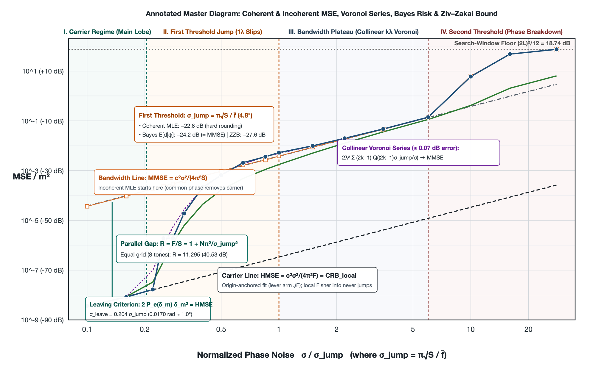
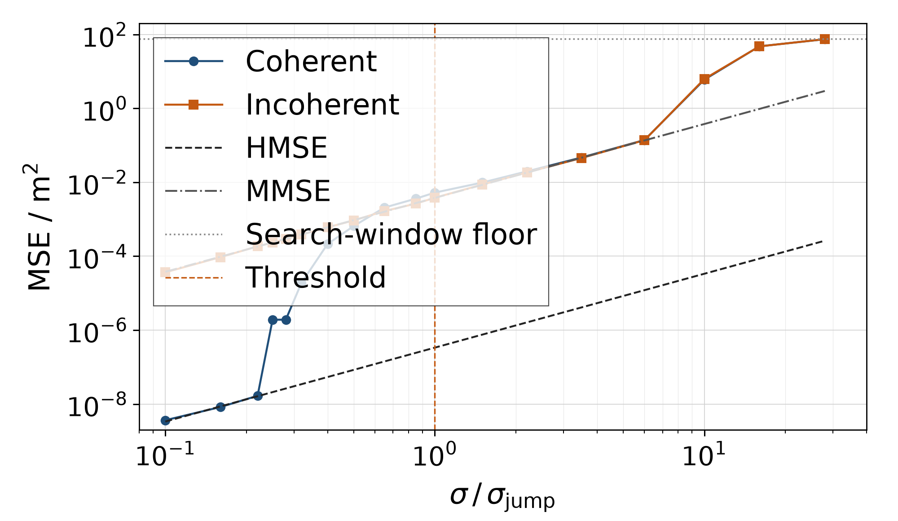
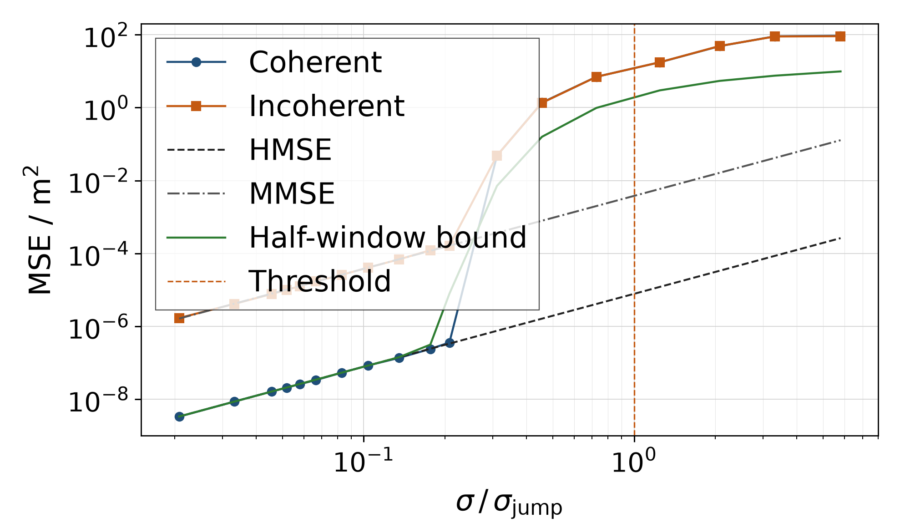

The Threshold of Multi-Frequency Phase Ranging
October 2026
Abstract
Given wrapped phase readings \(\varphi_i = \mathrm{wrap}(2\pi f_i d/c + e_i)\) corrupted by independent Gaussian noise \(e_i \sim \mathcal{N}(0,\sigma^2)\) across \(N\) frequencies \(f_1,\dots,f_N\), coherent maximum-likelihood range estimation—minimizing the sum of squared wrapped residuals—exhibits three regimes separated by two thresholds on a log-log plot (Overview Figure). Inside the low-noise main lobe, wrapping does not act, and coherent estimation uses the absolute phase of each tone relative to a shared local oscillator to fit a line through the origin with lever arm \(\sqrt{F}\) (\(F = \sum_i f_i^2\)), following the carrier line \(\mathrm{HMSE} = \frac{c^2\sigma^2}{4\pi^2 F}\). Across the first threshold, whole-cycle resolution fails, absolute carrier phase ceases to resolve range, and the estimator reduces to a two-parameter slope fit on the centred frequency offsets \(S = \sum_i (f_i-\bar f)^2\) (collapsing the lever arm to the internal cluster spread \(\sqrt{S}\)), jumping onto the parallel bandwidth line \(\mathrm{MMSE} = \frac{c^2\sigma^2}{4\pi^2 S}\) (Li and Qi, 2012; its large-\(N\) limit recovers the continuous-spectrum factor of Weinstein and Weiss, 1984). By the orthogonal decomposition \(F = S + N\bar f^2\), the vertical gap \(R = F/S = 1 + N\bar f^2/S\) is independent of noise—on an eight-tone equal grid from 2400 to 2470 MHz (\(\bar f/B \approx 35\)), this lever-arm ratio separates the two parallel lines by \(R = 11295\) (\(40.53\,\mathrm{dB}\)). At phase noise of order \(0.5\text{–}1\,\mathrm{rad}\) (the second threshold), the high-SNR phase marginal itself breaks down and the error rises to the search-window floor; returning to the underlying complex baseband observations \(y_i = e^{\mathrm{j}2\pi f_i d/c}+n_i\), envelope weighting by \(|y_i|\) in complex maximum likelihood suppresses deep-faded tones and recovers \(5.37\,\mathrm{dB}\) over unweighted phase least squares at \(6\,\sigma_{\mathrm{jump}}\) (per-tone \(\mathrm{SNR}\approx 3\,\mathrm{dB}\)), while leaving the first threshold unchanged.

Overview Figure. Four-regime log-log anatomy of wrapped multi-frequency phase ranging (instantiated on the eight-tone equal grid from 2400 to 2470 MHz). The diagram labels the carrier line \(\mathrm{HMSE}\) (local Cramér–Rao bound), the bandwidth line \(\mathrm{MMSE}\) (where incoherent estimation starts from \(\sigma\to 0\)), the vertical-horizontal coupling law \(R = 1 + N\pi^2/\sigma_{\mathrm{jump}}^2\), the leaving-point criterion \(2P_e(\delta_m)\delta_m^2 = \mathrm{HMSE}\), the three-layer risk split at the first threshold \(\sigma_{\mathrm{jump}} = \pi\sqrt{S}/\bar f\), and the collinear multi-wavelength Voronoi series that analytically bridges discrete slips to \(\mathrm{MMSE}\).
The first threshold occurs at a single-tone phase standard deviation far below the folding boundary \(\pm\pi\) (\(180^\circ\)): on the equal grid, \(\sigma_{\mathrm{jump}} = 0.0836\,\mathrm{rad} \approx 4.8^\circ\), nearly forty times below \(\pi\). Wrapping acts at \(4.8^\circ\) not because individual readings fold across \(\pm\pi\), but because shifting the range hypothesis by one mean wavelength \(\lambda = c/\bar f\) rotates all tones together by a full cycle \(2\pi\), leaving only the small fan of relative frequency offsets \(\alpha_i(\lambda) = 2\pi(f_i-\bar f)/\bar f\) after modulo-\(2\pi\) reduction. The resulting binary Gaussian test scale \(\sigma_{\mathrm{jump}} = \pi\sqrt{S}/\bar f\) is locked to the vertical gap \(R\) by the single dimensionless moment \(S/\bar f^2\):
The higher the carrier-to-bandwidth gain \(R\) of a narrowband system, the narrower the phase-noise corridor \(\sigma_{\mathrm{jump}} \propto 1/\sqrt{R}\) before whole-cycle slips occur. The incoherent estimator, which removes an unknown common phase, lies on the bandwidth line from \(\sigma\to 0\), proving that \(\sigma_{\mathrm{jump}}\) is a threshold of estimators that exploit absolute carrier phase rather than a singularity of the observations (paralleling the single-tone frequency threshold of Rife and Boorstyn, 1974). Coherent estimation leaves the carrier line where \(2Q(\sigma_{\mathrm{jump}}/\sigma)\lambda^2 = \mathrm{HMSE}\) (\(0.204\,\sigma_{\mathrm{jump}} = 0.0170\,\mathrm{rad} \approx 1^\circ\) on the equal grid), follows \(r_{\mathrm{slip}}\lambda^2\) up to \(\sigma_{\mathrm{jump}}\), and across \(1.5\text{–}6\,\sigma_{\mathrm{jump}}\) is governed within \(0.07\,\mathrm{dB}\) by the collinear Voronoi series \(\bigl(1-2Q(\sigma_{\mathrm{jump}}/\sigma)\bigr)\mathrm{HMSE} + 2\lambda^2\sum_{k\ge 1}(2k-1)Q\bigl((2k-1)\sigma_{\mathrm{jump}}/\sigma\bigr)\)—because the unwrapped difference vectors \(\boldsymbol{\alpha}(k\lambda) = k\boldsymbol{\alpha}(\lambda)\) are collinear along \(f_i-\bar f\), placing the Voronoi boundary between \((k-1)\lambda\) and \(k\lambda\) at \((2k-1)\sigma_{\mathrm{jump}}\) and causing the discrete Riemann sum to converge analytically to \(\mathrm{MMSE}\).
Wrapped-normal Fisher information and the Cramér–Rao bound see only the main-lobe curvature and stay within \(0.03\,\mathrm{dB}\) of \(\mathrm{HMSE}\) past \(10\,\sigma_{\mathrm{jump}}\). Capturing the jump via an information-theoretic lower bound requires the valley-filled Ziv–Zakai bound on a prior interval \([0, L]\) (Ziv and Zakai, 1969; Bellini and Tartara, 1974), which integrates the right-to-left running maximum of the weighted pairwise error probability \((L-\delta)P_e(\delta)\): it coincides with \(\mathrm{HMSE}\) at low noise and reaches \(-27.60\,\mathrm{dB}\) at the equal-grid threshold (\(96\%\) carried by the \(1\lambda\) and \(2\lambda\) segments), lying \(4.82\,\mathrm{dB}\) below the fixed-centre coherent trials (\(-22.78\,\mathrm{dB}\)). Because the wrapped cost \(C(d) = \sum_i \mathrm{wrap}(\varphi_i - 2\pi f_i d/c)^2\) is an exact piecewise parabola of constant curvature \(\beta^2 = 4\pi^2 F/c^2\) between tone-wrapping breakpoints, evaluating the exact Bayesian posterior mean \(\hat d_{\mathrm{Bayes}} = \mathbb{E}[d\mid\boldsymbol{\varphi}]\) under the same uniform prior splits this \(4.82\,\mathrm{dB}\) gap into \(0.24\,\mathrm{dB}\) from prior boundary truncation, \(1.20\,\mathrm{dB}\) from the hard-rounding overshoot of MLE relative to smooth Boltzmann averaging (\(\hat d_{\mathrm{Bayes}}\) lands at \(-24.22\,\mathrm{dB}\), right on \(\mathrm{MMSE} = -24.21\,\mathrm{dB}\)), and \(3.38\,\mathrm{dB}\) (\(70\%\)) from the pairwise-test slack of the Ziv–Zakai bound itself.
Across unequal tone spacings, the cost surface \(J(\delta) = \sum_i \mathrm{wrap}(2\pi f_i\delta/c)^2\) is governed by three orthogonal design quantities that never substitute for one another: (1) the relative second moment \(S/\bar f^2\), which sets \(J(\lambda) = 4\sigma_{\mathrm{jump}}^2\) and \(R\); (2) the bottom cost and squared offset \(\bigl(J(\delta),\delta^2\bigr)\) of mid-to-far valleys (\(\lambda \ll \delta \le L\)), which decide whether the bandwidth plateau survives; and (3) the greatest common divisor \(\gcd\) of the frequency gaps, which sets only the exact unambiguous period (\(J(\delta)=0\)). Moment matching at fixed \(S\) extends the exact period tenfold from \(30\,\mathrm{m}\) to \(300\,\mathrm{m}\) without altering \(J(\delta)\) within \(2\,\mathrm{m}\) or postponing the first threshold (parting from the equal grid only at \(10\,\sigma_{\mathrm{jump}}\) across a \(10.6\text{–}11.3\,\mathrm{m}\) valley cluster whose \(1.38\,\mathrm{dB}\) bound gap widens to \(1.70\,\mathrm{dB}\) under the exact wrapped-normal likelihood ratio); conversely, geometric spacing (ratio \(1.02\)) widens \(S\) by \(23\times\) but leaves a non-collinear far valley at \(c/\overline{\Delta f} = 6.211\,\mathrm{m}\) (\(\approx 50\lambda\)) as deep as \(J(\lambda)\), eliminating the bandwidth plateau and lifting the mean square \(21\,\mathrm{dB}\) above \(\mathrm{MMSE}\). Tone placement must therefore maximize the earliest solution \(\sigma_{\mathrm{leave}}\) of \(2P_e(\delta_m)\delta_m^2 = \mathrm{HMSE}(\sigma)\) across all valleys in the half-window: within the equal grid's \(70\,\mathrm{MHz}\) span and \(1\,\mathrm{MHz}\) synthesizer step, pushing all eight tones to the band edges creates a two-cluster beat valley at \(4.494\,\mathrm{m}\) (\(J = 1.51\,J(\lambda)\)) that overtakes \(\delta=\lambda\), whereas shifting the innermost pair inward by \(2\,\mathrm{MHz}\) (2400, 2401, 2402, 2405, 2465, 2468, 2469, 2470 MHz) delays \(\sigma_{\mathrm{leave}}\) by \(49.1\%\) (from \(0.0170\) to \(0.0254\,\mathrm{rad}\)) while keeping every far valley at \(\delta \ge 2\lambda\) above \(4.00\,J(\lambda)\).
1 Observation model
A phase is measured at each of \(N\) frequencies \(f_1,\dots,f_N\), and the range \(d\) is estimated from these phases. The reading at the \(i\)-th frequency is
with independent \(e_i\) and \(c = 299\,792\,458\,\mathrm{m/s}\). The map \(\mathrm{wrap}(\theta) = \bigl((\theta + \pi)\bmod 2\pi\bigr) - \pi\) reduces an angle modulo \(2\pi\) to the principal interval \((-\pi,\pi]\).
The true phase \(2\pi f_i d/c\) is a number of whole cycles plus a fraction of a cycle, and the reading keeps only the fraction. When the range changes by \(\delta\), the \(i\)-th reading turns by \(2\pi f_i\delta/c\); if every frequency turns by nearly a whole number of cycles, all the readings stay nearly the same, and \(d\) and \(d+\delta\) are hard to tell apart. Write \(\bar f = \frac{1}{N}\sum_i f_i\) for the mean frequency and \(\lambda = c/\bar f\) for the mean wavelength. At \(\delta = \lambda\) the \(i\)-th reading turns by
only a small angle proportional to the relative frequency offset more than a whole cycle, and the closer the tone lies to the mean frequency, the smaller that angle; when every \(f_i\delta/c\) is an exact integer, the readings do not change at all. A finite set of wrapped phases therefore determines the range only up to a set of aliases: approximate aliases near integer multiples of the mean wavelength, and an exact period set by the greatest common divisor of the frequency gaps.
When Gaussian noise \(e_i \sim \mathcal{N}(0,\sigma^2)\) is folded by \(\mathrm{wrap}\), the wrapped residual \(\psi_i = \mathrm{wrap}(\varphi_i - 2\pi f_i d/c) \in (-\pi,\pi]\) follows the wrapped normal distribution, whose density is the sum over all integer-cycle shifts:
When \(\sigma \ll \pi\), the folded tail terms with \(k \neq 0\) are at most \(O(e^{-\pi^2/(2\sigma^2)})\) on the principal interval and can be dropped, reducing the log-likelihood \(\sum_i \ln p_{\mathrm{WN}}(\psi_i;\sigma)\) to \(-\frac{1}{2\sigma^2}\sum_i \psi_i^2\). Maximum likelihood then coincides with the coherent estimator, which minimizes the sum of squared wrapped residuals:
It uses the absolute phase of each tone relative to a single local oscillator, so the carrier itself enters the range information.
If the tones also share an unknown common phase \(\theta\) (for example, when transmitter and receiver have no common phase reference), the observation model is \(\varphi_i = \mathrm{wrap}(2\pi f_i d/c + \theta + e_i)\). In the unit-phasor cosine objective
maximizing over \(\theta\) first aligns \(\theta\) with the argument of the complex phasor sum, leaving its modulus. This gives the incoherent estimator:
Multiplying every phasor by \(e^{\mathrm{j}\theta}\) does not change the modulus, so the common phase drops out. Because the carrier term \(2\pi\bar f d/c\) is also the same constant across all tones, it cannot be separated from \(\theta\) and drops out with it; the range information that remains comes only from the centred offsets \(f_i-\bar f\), that is, from the tone spacings.
The sections below work out how the mean-square error of the coherent estimator under this model changes across the entire noise range as \(\sigma\) grows, using standard tools from parameter estimation: main-lobe linear least squares, binary hypothesis testing and collinear Voronoi partitioning, wrapped-normal Fisher information and the Cramér–Rao bound, the Bellini–Tartara valley-filled Ziv–Zakai bound, the exact piecewise-parabolic Bayesian posterior mean, and the exact wrapped-normal likelihood ratio.
2 The phenomenon: two parallel lines and a jump
Take eight tones from 2400 to 2470 MHz in 10 MHz steps (the equal grid below), repeat trials at a series of \(\sigma\), and record the sample mean-square error of the coherent estimator. The result is Figure 1. The horizontal axis is \(\sigma\) divided by the scale \(\sigma_{\mathrm{jump}} = 0.0836\,\mathrm{rad}\) derived in Section 3. The lower black dashed line is the carrier line, HMSE (high-SNR mean-square error); the upper grey dash-dot line is the bandwidth line, MMSE (moderate-SNR mean-square error, following the terminology of the interferometry literature rather than Bayesian minimum mean-square error).

Figure 1. Mean-square error of the coherent estimator on eight equally spaced tones. Blue circles: trials, 1600 or 8000 per point, random seed 7. Black dashed: carrier line (HMSE); grey dash-dot: bandwidth line (MMSE); green: half-window Ziv–Zakai bound (Section 5); grey dotted: search-window floor; orange vertical line: \(\sigma = \sigma_{\mathrm{jump}}\).
Read the figure from left to right. Up to \(0.22\,\sigma_{\mathrm{jump}}\) the points lie on the carrier line: the whole cycles at every frequency are resolved correctly, and the carrier itself measures the range. As \(\sigma\) grows by less than another factor of three, to about \(0.65\,\sigma_{\mathrm{jump}}\), the points rise almost vertically onto the bandwidth line; from there to \(6\,\sigma_{\mathrm{jump}}\) they stay at most 1.4 dB above it. In this stretch the whole cycles are no longer reliable, and only the tone spacings remain usable. The two lines are parallel and 40.53 dB apart. As \(\sigma\) grows further, the mean square leaves the bandwidth line and rises to the search-window floor, the mean square when the estimate carries no information and the error is uniform over the whole search window. Counted in the direction of growing noise, the jump is the first threshold and this rise is the second, at phase noise of order \(1\,\mathrm{rad}\). The phase model above is the high-SNR limit of complex observations \(y_i = \exp(\mathrm{j}\,2\pi f_i d/c) + n_i\); Section 4.2 returns directly to the complex observations to check both thresholds.
The heights of the two lines follow directly from linear least squares inside the main lobe, the stretch around the true range \(d_0\) where the phase residuals have not yet crossed \(\pm\pi\). While \(d = d_0 + \epsilon\) stays in the main lobe, \(\mathrm{wrap}\) can be dropped, and with \(y_i = \varphi_i - 2\pi f_i d_0/c\) the observations reduce to a linear model:
- Coherent estimation (one-parameter fit through the origin): minimizing \(\sum_i (y_i - \frac{2\pi f_i}{c}\epsilon)^2\) over \(\epsilon\) gives \(\hat\epsilon = \frac{c}{2\pi}\frac{\sum_i f_i y_i}{\sum_i f_i^2}\). Because \(y_i = e_i\) are independent with variance \(\sigma^2\), the variance is \(\mathrm{Var}(\hat\epsilon) = \frac{c^2}{4\pi^2}\frac{\sum_i f_i^2 \sigma^2}{(\sum_i f_i^2)^2}\).
- Incoherent estimation or unknown common phase (two-parameter fit with an intercept): minimizing \(\sum_i (y_i - \theta - \frac{2\pi f_i}{c}\epsilon)^2\) over \(\theta\) and \(\epsilon\) first sets \(\hat\theta = \bar y - \frac{2\pi\bar f}{c}\hat\epsilon\), which centres the frequencies to \(f_i - \bar f\) and yields \(\hat\epsilon_{\mathrm{inc}} = \frac{c}{2\pi}\frac{\sum_i (f_i-\bar f)y_i}{\sum_i (f_i-\bar f)^2}\).
With \(F = \sum_{i=1}^N f_i^2\) and \(S = \sum_{i=1}^N (f_i-\bar f)^2\), the two mean-square lines are
Geometrically, when phase is plotted against frequency, the coherent estimator constrains the line to pass through the origin \((0,0)\), so the lever arm anchoring the slope is the absolute distance of the tones from the origin, \(\sqrt{F}\); once whole-cycle resolution or the common phase reference is lost, the origin anchor disappears and the lever arm collapses to the internal spread \(\sqrt{S}\) of the tone cluster. Because \(\sum_i (f_i-\bar f) = 0\), expanding \(F = \sum_i (f_i - \bar f + \bar f)^2\) gives the orthogonal decomposition
Both lines are proportional to \(\sigma^2\), and their ratio \(R\) does not depend on \(\sigma\), so they are parallel on a log-log plot. On the equal grid \(\bar f = 2435\,\mathrm{MHz}\), \(S = 4200\,\mathrm{MHz}^2\), and \(R = 11295\) (40.53 dB); the mean wavelength is \(\lambda = 0.12312\,\mathrm{m}\).
These two asymptotic lines are equations (30) and (42) of Li and Qi, obtained by perturbation analysis; the names HMSE and MMSE are also theirs. They number thresholds in the direction of increasing SNR, calling the transition from MMSE down to HMSE the second threshold (the first threshold here), but perturbation analysis within a single ambiguity basin does not express the noise level of this jump as a function of the frequency set.
For \(N\) equally spaced tones with step \(\Delta f\) and span \(B = (N-1)\Delta f\), the offsets are \(f_i - \bar f = \bigl(i - \frac{N+1}{2}\bigr)\Delta f\). Using the sum-of-squares identity \(\sum_{i=1}^N \bigl(i - \frac{N+1}{2}\bigr)^2 = \frac{N(N^2-1)}{12}\), the centred second moment is
Continuous-time passive time-delay estimation exhibits the same three regimes: using an improved Ziv–Zakai bound, Weinstein and Weiss showed that at high SNR the bound coincides with the Cramér–Rao bound, at moderate SNR it is higher by \(12(\omega_0/W)^2\) (\(\omega_0\) the centre frequency, \(W\) the bandwidth), and at low SNR it approaches the prior variance. As \(N \to \infty\), the coefficient \(\frac{12(N-1)}{N+1}\) tends to 12, recovering their factor; at finite \(N = 8\) the coefficient is 9.33, about 1.1 dB below the continuous flat-spectrum formula at the same \(\bar f/B\).
3 The phase scale of the first threshold and the multi-wavelength transition
3.1 The phase scale \(\sigma_{\mathrm{jump}}\) and the binary Gaussian test
Two range hypotheses \(d_0\) and \(d_0+\delta\) differ in true phase by \(2\pi f_i\delta/c\) at the \(i\)-th frequency. After wrapping to \((-\pi,\pi]\), the phase-difference vector \(\boldsymbol{\alpha}(\delta)\) has components \(\alpha_i(\delta) = \mathrm{wrap}(2\pi f_i\delta/c)\) and squared Euclidean length
\(J(0) = 0\). A local minimum of \(J\) at \(\delta \neq 0\) is a valley; the smaller \(J(\delta)\) at the bottom of a valley, the harder it is to tell apart two ranges \(\delta\) apart. Figure 2 shows \(J(\delta)\) for the equal grid.

Figure 2. \(J(\delta)\) for the equal grid (in rad²), drawn only where \(J \le 2\); the orange vertical line marks the mean wavelength \(\lambda\). The valleys lie near integer multiples of \(\lambda\), and \(J\) at the bottom of the \(k\)-th valley is about \(k^2 J(\lambda)\). At the mean wavelength the bottom is \(J = 0.028\), almost on zero at this scale.
Under unwrapped Gaussian noise \(\mathbf{e} \sim \mathcal{N}(\mathbf{0},\sigma^2\mathbf{I}_N)\), the maximum-likelihood test between equiprobable hypotheses \(d_0\) and \(d_0+\delta\) projects the observation onto the unit difference vector \(\mathbf{u} = \boldsymbol{\alpha}(\delta)/\sqrt{J(\delta)}\). The projected noise \(e_\parallel = \mathbf{u}^\top\mathbf{e} \sim \mathcal{N}(0,\sigma^2)\) causes a decision error whenever it crosses the midpoint \(\sqrt{J(\delta)}/2\) between the two hypotheses, so the pairwise error probability is
Take \(\delta = \lambda\). Removing the whole cycle \(2\pi\) from \(2\pi f_i/\bar f = 2\pi + 2\pi(f_i-\bar f)/\bar f\) leaves \(2\pi(f_i-\bar f)/\bar f\), so \(J(\lambda) = \frac{4\pi^2 S}{\bar f^2}\) and \(\sqrt{J(\lambda)} = 2\pi\sqrt{S}/\bar f\). Defining the characteristic phase scale
gives \(\sqrt{J(\lambda)} = 2\sigma_{\mathrm{jump}}\) and \(P_e(\lambda) = Q(\sigma_{\mathrm{jump}}/\sigma)\): \(\sigma_{\mathrm{jump}}\) is the noise scale for distinguishing two ranges one mean wavelength apart. At \(\sigma = \sigma_{\mathrm{jump}}\) the total probability of slipping by one wavelength to either \(+\lambda\) or \(-\lambda\) is \(2Q(1) = 0.317\). The exact bottom of the first valley lies at \(\delta = \lambda(1-1/R)\), where \(J = (1-1/R)\,J(\lambda)\), differing from \(J(\lambda)\) only by \(1/R\).
Substituting \(\sigma_{\mathrm{jump}}\) into \(R = 1 + N\bar f^2/S\) locks the vertical gap and the horizontal threshold together through a single dimensionless moment \(S/\bar f^2\):
The larger the carrier-to-bandwidth gain \(R\) of a narrowband system, the narrower the phase-noise corridor \(\sigma_{\mathrm{jump}}\) before whole-cycle slips occur. On the equal grid \(\sigma_{\mathrm{jump}} = 0.0836\,\mathrm{rad}\) (about \(4.8^\circ\)). At that noise no individual reading comes near the folding boundary \(\pm\pi\) (\(180^\circ\)); wrapping acts at \(4.8^\circ\) because shifting the range hypothesis by \(\lambda\) rotates all tones together by a full cycle, leaving only the small fan of relative frequency offsets to resist the noise.
This \(P_e(\delta)\) comes from the Euclidean Gaussian vector test; when individual residuals \(\alpha_i(\delta)\) are far below \(\pi\), it agrees closely with the exact wrapped-normal likelihood-ratio test (within \(0.9\%\) at \(\delta=\lambda,\,\sigma=\sigma_{\mathrm{jump}}\)), while valleys with residuals near \(\pi\) are evaluated with the exact wrapped likelihood ratio in Section 6.3. For round-trip ranging the phase is \(4\pi f d/c\), which replaces \(c\) by \(c/2\): the wavelength and exact period halve, both mean-square lines divide by 4, and \(\sigma_{\mathrm{jump}}\), which depends only on frequency ratios, keeps its value in radians.
3.2 The one-wavelength mixture and where it leaves the carrier line
At the onset of the jump, higher-order slips are negligible compared with one-wavelength slips. If a trial slips into \(\pm\lambda\) with probability \(p = 2Q(\sigma_{\mathrm{jump}}/\sigma)\) and otherwise stays in the main lobe, the mixture approximation of the mean square is
Since \(\lambda^2/\mathrm{HMSE} = 4R(\sigma_{\mathrm{jump}}/\sigma)^2\), setting \(p\lambda^2 = \mathrm{HMSE}\) on the equal grid gives \(\sigma = 0.0170\,\mathrm{rad}\) (\(0.204\,\sigma_{\mathrm{jump}}\)), where the mixture leaves the carrier line. At the threshold \(\sigma = \sigma_{\mathrm{jump}}\),
so with \(p = 2Q(1) = 0.317\), the slip term \(p\lambda^2 = 4p\,\mathrm{MMSE} = 1.269\,\mathrm{MMSE}\) is 1.0 dB above the bandwidth line: at \(\sigma_{\mathrm{jump}}\), one-wavelength slips alone suffice to lift the mean square to the bandwidth line.
3.3 The equal-grid trials and the collinear Voronoi multi-wavelength series
The coherent estimator takes the global minimum over a search window of half-length \(L = 14.990\,\mathrm{m}\) centred on the true range \(12.345\,\mathrm{m}\) (window length \(29.979\,\mathrm{m} = c/\Delta f\), the equal grid's exact period): first the minimum on a grid of step \(\lambda/8\), then local Gauss–Newton refinement. The six noise levels from \(0.22\) to \(0.50\,\sigma_{\mathrm{jump}}\) use 8000 trials each and the others 1600, with random seed 7 (archived in computation/data/). A slip is an error exceeding \(\lambda/2\) in magnitude; decibel values are relative to \(1\,\mathrm{m}^2\).
From \(0.10\) to \(0.22\,\sigma_{\mathrm{jump}}\) no slips occur, and the sample mean square lies within 0.35 dB of the carrier line. At \(0.25\,\sigma_{\mathrm{jump}}\) a single slip in 8000 trials lifts the sample mean square to \(-57.2\,\mathrm{dB}\), matching \(\lambda^2/8000 = -57.2\,\mathrm{dB}\); one expected slip in \(M = 8000\) trials requires \(p = 1/8000\), which occurs at \(0.26\,\sigma_{\mathrm{jump}}\). From \(0.25\) to \(1.0\,\sigma_{\mathrm{jump}}\) the sample mean square equals the slip rate times \(\lambda^2\) within 0.1 dB; at \(\sigma_{\mathrm{jump}}\) the slip rate is 0.344 and the sample mean square is \(-22.78\,\mathrm{dB}\), 1.43 dB above the bandwidth line (\(-24.21\,\mathrm{dB}\)).
Beyond \(1.5\,\sigma_{\mathrm{jump}}\), slips into \(\pm 2\lambda, \pm 3\lambda,\dots\) cause the sample mean square to exceed the slip rate times \(\lambda^2\). Weighting \((k\lambda)^2\) directly by the pairwise error probabilities \(Q(k\sigma_{\mathrm{jump}}/\sigma)\) overpredicts the sample mean square by \(2.7\text{–}4.1\,\mathrm{dB}\) across \(1.5\text{–}6.0\,\sigma_{\mathrm{jump}}\). The reason is geometric collinearity: as long as \(|k(f_i-\bar f)/\bar f| < 1/2\) (which holds up to \(k = 34\) on the equal grid), the unwrapped phase-difference vectors \(\boldsymbol{\alpha}(k\lambda) = k\boldsymbol{\alpha}(\lambda)\) all lie along the same one-dimensional direction \(\mathbf{u} \propto (f_i - \bar f)\) at distances \(2k\sigma_{\mathrm{jump}}\). In simultaneous competition along a line, the \((k-1)\lambda\) valley shields the \(k\lambda\) valley: the Voronoi boundary where \(e_\parallel = \mathbf{u}^\top\mathbf{e}\) steps from \((k-1)\lambda\) to \(k\lambda\) is their midpoint \((2k-1)\sigma_{\mathrm{jump}}\), not the pairwise midpoint \(k\sigma_{\mathrm{jump}}\) with the origin. The probability of landing in \(\pm k\lambda\) is therefore
Summing \(\sum_{k\ge 1} p_k (k\lambda)^2\) by parts (each threshold crossing at \((2k-1)\sigma_{\mathrm{jump}}\) adds \((k^2 - (k-1)^2)\lambda^2 = (2k-1)\lambda^2\)) yields the collinear Voronoi series:
At \(1.5, 2.2, 3.5, 6.0\,\sigma_{\mathrm{jump}}\) on the equal grid, this series gives \(-20.09, -17.08, -13.22, -8.61\,\mathrm{dB}\), matching the trial sample mean square (\(-20.06, -17.03, -13.28, -8.54\,\mathrm{dB}\)) within \(+0.03, +0.05, -0.07, +0.07\,\mathrm{dB}\). Moreover, as \(\sigma/\sigma_{\mathrm{jump}}\) grows, setting \(u_k = (2k-1)\sigma_{\mathrm{jump}}/\sigma\) with step \(\Delta u = 2\sigma_{\mathrm{jump}}/\sigma\) turns the series into the midpoint Riemann sum for a continuous integral. Using integration by parts,
the discrete wavelength-slip series converges analytically to the bandwidth line:
This bridges the discrete jump and the continuous plateau: the coherent mean square rides the bandwidth line MMSE above the threshold because the discrete \(\pm k\lambda\) carrier-cycle slips are collinear along the centred frequency vector and sum over their Voronoi cells to the continuous bandwidth variance.
4 Local information does not jump; the incoherent counterexample and complex observations
4.1 The Cramér–Rao bound and the incoherent counterexample
The Fisher information of a single wrapped-normal phase \(\varphi_i \sim p_{\mathrm{WN}}(\varphi_i - \mu_i;\sigma)\) about its mean \(\mu_i = 2\pi f_i d/c\) is
a smooth function of \(\sigma\). By the chain rule, the Fisher information and Cramér–Rao bound (CRB) for range across \(N\) independent tones are
For \(\sigma \ll \pi\), \(I_\varphi(\sigma) \to 1/\sigma^2\) and \(\mathrm{CRB}(d)\) coincides with \(\mathrm{HMSE}\); on the equal grid it stays within 0.03 dB of the carrier line all the way to \(\sigma = 0.84\,\mathrm{rad}\) (\(10\,\sigma_{\mathrm{jump}}\)). Fisher information measures only the local curvature at the bottom of the main lobe and is blind to the valleys outside it, so it never jumps. Single-tone frequency estimation has the same structure: Rife and Boorstyn showed that at high SNR the variance coincides with the Cramér–Rao bound, and below a threshold SNR the estimate lands on a wrong spectral peak.
The incoherent estimator shows whose jump this is. Using the same observations at the same tones without the absolute carrier phase, it lies on the bandwidth line from the lowest noise on (Figure 3): \(-44.4\,\mathrm{dB}\) at \(0.10\,\sigma_{\mathrm{jump}}\) against \(-44.2\,\mathrm{dB}\) for \(\mathrm{MMSE}\). Because the common phase removes the carrier from the start, there is no lower line for it to leave and no first threshold. Thus \(\sigma_{\mathrm{jump}}\) is a threshold of estimators that use the absolute carrier phase, not a property of the observations themselves.

Figure 3. Mean-square error of the coherent estimator (blue circles) and the incoherent estimator (orange squares) on the equal grid, against \(\sigma/\sigma_{\mathrm{jump}}\). The incoherent estimator lies on the bandwidth line from the lowest noise on; from about \(2\,\sigma_{\mathrm{jump}}\) the two curves nearly coincide, and at \(10\,\sigma_{\mathrm{jump}}\) they leave the bandwidth line together.
4.2 Rechecking the first and second thresholds on complex observations
The phase model is the high-SNR marginal of complex baseband observations \(y_i = e^{\mathrm{j}2\pi f_i d/c} + n_i\) with independent circular complex Gaussian noise \(n_i \sim \mathcal{CN}(0, 2\sigma^2)\) and per-tone complex \(\mathrm{SNR} = 1/(2\sigma^2)\). Direct coherent maximum likelihood on \(y_i = |y_i|e^{\mathrm{j}\varphi_i}\) maximizes the envelope-weighted cosine sum:
Running \(\hat d_{\mathrm{complex}}\) alongside unweighted phase-only least squares on \(\varphi_i = \arg(y_i)\) and the wrapped-normal model on the equal grid (archived in computation/data/open_questions.json) establishes two results:
- The first threshold and the bandwidth plateau up to \(3.5\,\sigma_{\mathrm{jump}}\) (\(\sigma = 0.293\,\mathrm{rad}\), per-tone \(\mathrm{SNR} \ge 7.66\,\mathrm{dB}\)) do not move: at \(\sigma = \sigma_{\mathrm{jump}}\) (\(\mathrm{SNR} = 18.54\,\mathrm{dB}\)), both complex coherent MLE and unweighted phase extraction give \(-23.03\,\mathrm{dB}\) (slip rate \(0.321\)), matching the wrapped-normal value \(-22.78\,\mathrm{dB}\) (slip rate \(0.344\)) within sampling fluctuation.
- The second threshold (\(\sigma \ge 6\,\sigma_{\mathrm{jump}} = 0.502\,\mathrm{rad}\), \(\mathrm{SNR} \le 2.98\,\mathrm{dB}\)) arrives earlier and separates envelope weighting from phase-only estimation: at \(6\,\sigma_{\mathrm{jump}}\) (\(\mathrm{SNR} = 2.98\,\mathrm{dB}\)), the wrapped-normal curve still lies on the bandwidth line (\(-8.54\,\mathrm{dB}\)). On complex observations, destructive noise fades drive some envelopes \(|y_i|\) near zero, spreading their phases nearly uniformly over \((-\pi,\pi]\); unweighted phase least squares on \(\arg(y_i)\) rises early to \(-0.90\,\mathrm{dB}\) (\(7.75\,\mathrm{dB}\) above the bandwidth line), whereas \(\hat d_{\mathrm{complex}}\) weights each tone by \(|y_i|\), suppressing deep-faded tones and holding the mean square to \(-6.27\,\mathrm{dB}\)—a \(5.37\,\mathrm{dB}\) gain over phase-only estimation. By \(10\,\sigma_{\mathrm{jump}}\) (\(\mathrm{SNR} = -1.46\,\mathrm{dB}\)), complex coherent and incoherent MLE both reach \(10.1\,\mathrm{dB}\) before meeting the search-window floor at \(16\text{–}28\,\sigma_{\mathrm{jump}}\).
5 The half-window Ziv–Zakai bound and the Bayesian mean square
5.1 Four-step derivation and valley-by-valley decomposition
The green curve in Figure 1 leaves the carrier line before the trials do. Its derivation from first principles shows exactly what it constrains. Let the true range \(d\) be uniform on \([0, L]\) and write \(\epsilon = \hat d - d\) for the error of any estimator \(\hat d\):
- Tail-integral identity: integrating by parts for the non-negative random variable \(|\epsilon|\) and substituting \(x = \delta/2\) (with \(|\epsilon| \le L\)) gives
\[ \mathbb{E}[\epsilon^2] = 2\int_0^L x\,\mathbb{P}(|\epsilon|\ge x)\,\mathrm{d}x = \frac{1}{2}\int_0^L \delta\,\mathbb{P}\!\left(|\epsilon| \ge \frac{\delta}{2}\right)\mathrm{d}\delta. \]
- Reduction to binary hypothesis testing: for any offset \(\delta \in (0, L)\) and base point \(d_0 \in [0, L-\delta]\), an estimator whose error is smaller than \(\delta/2\) at both \(d_0\) and \(d_0+\delta\) decides without error between the two equiprobable hypotheses, so the average tail probability at the pair is at least the optimal binary test error \(P_e(\delta)\):
\[ \frac{1}{2}\Bigl[\mathbb{P}\bigl(|\epsilon|\ge \delta/2 \mid d = d_0\bigr) + \mathbb{P}\bigl(|\epsilon|\ge \delta/2 \mid d = d_0+\delta\bigr)\Bigr] \ge P_e(\delta). \]Integrating over \(d_0 \in [0, L-\delta]\) and dividing by \(L\) bounds the prior-averaged tail probability:\[ \frac{L}{2}\mathbb{P}\!\left(|\epsilon| \ge \frac{\delta}{2}\right) \ge (L-\delta)\,P_e(\delta). \]
- Bellini–Tartara valley filling: because the left side \(\frac{L}{2}\mathbb{P}(|\epsilon|\ge \delta/2)\) is non-increasing in \(\delta\), for every \(\eta \ge \delta\) it also exceeds \((L-\eta)P_e(\eta)\). Taking the maximum over all \(\eta \ge \delta\) fills every dip in \(h(\delta) = (L-\delta)P_e(\delta)\) with its right-to-left running maximum \(G[h](\delta) = \max_{\eta\ge\delta} h(\eta)\).
- Substitution into the second-moment integral: inserting \(G[h](\delta)\) into Step 1 yields the valley-filled Ziv–Zakai bound:
\[ \mathrm{ZZB} = \frac{1}{L}\int_0^L \delta\, G\bigl[(L-\delta)\,P_e(\delta)\bigr]\,\mathrm{d}\delta, \qquad Gh = \max_{\eta\ge\delta} h(\eta). \]
Setting \(L = 14.990\,\mathrm{m}\) (half the search window) gives the half-window bound: no trial error exceeds \(L\), whereas taking \(L\) to be the full period \(29.979\,\mathrm{m}\) would artificially inflate the bound via the replica valley at \(D-\lambda\). At high SNR only the main lobe contributes: \(\sqrt{J(\delta)} \approx \beta\delta\) with \(\beta = 2\pi\sqrt{F}/c\), \(G\) does not act, and \(\mathrm{ZZB} \to (2\sigma/\beta)^2\int_0^\infty u\,Q(u)\,\mathrm{d}u = \sigma^2/\beta^2 = \mathrm{HMSE}\) (within \(0.00\,\mathrm{dB}\) at \(\sigma = 0.008\,\mathrm{rad}\), where all contribution comes from \(\delta \le 0.5\,\mathrm{mm}\)).
Near the threshold, scanning \(h(\delta) = (L-\delta)P_e(\delta)\) from right to left partitions the integral into flat segments: each new running maximum at a valley \(\delta_a\) holds \(G[h]\) constant to its left down to the first point \(\delta_b\) where \(h\) is higher, contributing
with \(\delta_b \approx \sqrt{J(\delta_a)}/\beta\) when the left end meets the main lobe. On the equal grid at \(\sigma = 0.0836\,\mathrm{rad}\), the three largest segments come from \(\lambda, 2\lambda, 3\lambda\) (\(-29.2, -32.9, -43.0\,\mathrm{dB}\)) and sum to \(-27.6\,\mathrm{dB}\), matching the full numerical integral (\(1\lambda\) carries \(67\%\) and \(2\lambda\) carries \(29\%\)).
5.2 What it constrains, and the three-way attribution of the \(4.82\,\mathrm{dB}\) gap at the threshold
At \(0.22\,\sigma_{\mathrm{jump}}\) the bound is already \(-74.8\,\mathrm{dB}\) (about 3 dB above the carrier line), while 8000 trials have no slip and give a sample mean square of \(-77.8\,\mathrm{dB}\). There is no contradiction: the bound constrains the expected mean square. With a slip probability of \(5.5\times 10^{-6}\), 8000 trials expect only \(0.044\) slips and usually draw none; including the rare slips via the mixture gives an expected mean square of \(-70.0\,\mathrm{dB}\), well above the bound.
At the threshold \(\sigma = \sigma_{\mathrm{jump}} = 0.0836\,\mathrm{rad}\), the half-window bound is \(-27.60\,\mathrm{dB}\), the bandwidth line is \(-24.21\,\mathrm{dB}\), and the fixed-centre coherent trials are at \(-22.78\,\mathrm{dB}\)—a \(4.82\,\mathrm{dB}\) gap between trials and bound. To separate prior differences, estimator suboptimality, and bound looseness, we evaluate the exact Bayesian posterior mean (the minimum mean-square error estimator) under the same uniform prior \(d \sim \mathrm{Unif}[0, L]\):
Because each tone's wrapped residual \(\mathrm{wrap}(\varphi_i - 2\pi f_i d/c)\) is linear in \(d\) with slope \(-2\pi f_i/c\) except where it jumps by \(+2\pi\) across \(-\pi\), the 8 tones partition \([0, L]\) into \(\approx 8L/\lambda \approx 977\) subintervals \([a_j, a_{j+1}]\). Inside each subinterval no tone wraps, so \(C(d)\) is an exact parabola of constant curvature \(\beta^2 = 4\pi^2 F/c^2\):
Coherent MLE \(\hat d_{\mathrm{ML}}\) selects the lowest parabola vertex across the \(\sim 977\) segments, while \(\hat d_{\mathrm{Bayes}}\) sums the closed-form Gaussian integrals across all segments without grid approximation (see computation/open_questions.py). At \(\sigma = 0.0836\,\mathrm{rad}\), the \(4.82\,\mathrm{dB}\) gap splits cleanly into three parts:
- Prior boundary truncation (\(0.24\,\mathrm{dB}\)): moving the true range from the window centre to \(\mathrm{Unif}[0, L]\) lowers coherent MLE from \(-22.78\,\mathrm{dB}\) to \(-23.02\,\mathrm{dB}\) (analytical collinear expectation \(-23.07\,\mathrm{dB}\)), because \(\lambda = 0.123\,\mathrm{m} \ll L = 14.99\,\mathrm{m}\) and boundary truncation affects only true ranges within \(\lambda\) of the ends.
- Hard-decision overshoot of MLE vs. Bayesian posterior averaging (\(1.20\,\mathrm{dB}\)): under the same uniform prior, \(\hat d_{\mathrm{Bayes}}\) achieves \(-24.29\,\mathrm{dB}\) (analytical collinear expectation \(-24.22\,\mathrm{dB}\)), landing directly on the bandwidth line \(\mathrm{MMSE} = -24.21\,\mathrm{dB}\) without overshooting it. Along the collinear \(k\lambda\) ladder, MLE applies the hard rounding staircase \(\lambda\,\mathrm{round}\bigl(\frac{\sigma}{2\sigma_{\mathrm{jump}}}Z\bigr)\) to the projected noise \(Z \sim \mathcal{N}(0,1)\), jumping a full \(\pm\lambda\) as soon as an adjacent lobe edges out the main lobe; \(\hat d_{\mathrm{Bayes}}\) weights the lobes smoothly by \(w_k(Z) \propto \exp\bigl(-\frac{1}{2}(Z - 2k\sigma_{\mathrm{jump}}/\sigma)^2\bigr)\), saving \(1.15\text{–}1.30\,\mathrm{dB}\) across the transition strip \(0.40\,\sigma_{\mathrm{jump}} \le \sigma \le 1.0\,\sigma_{\mathrm{jump}}\) before converging to \(\hat d_{\mathrm{ML}}\) within \(0.3\,\mathrm{dB}\) on the bandwidth plateau (\(\sigma \ge 2.2\,\sigma_{\mathrm{jump}}\)).
- Pairwise-test slack of the Ziv–Zakai bound (\(3.38\,\mathrm{dB}\)): even the optimal Bayesian estimator (\(-24.22\,\mathrm{dB}\)) lies \(3.38\,\mathrm{dB}\) above the half-window bound (\(-27.60\,\mathrm{dB}\)), accounting for \(70\%\) of the gap. This slack belongs to the bound itself, which reduces simultaneous competition among \(0, \pm\lambda, \pm 2\lambda,\dots\) to pairwise binary tests. Marginalizing over ambiguity lobes therefore recovers at most \(\sim 1.2\,\mathrm{dB}\) near the threshold and cannot cross the bandwidth line.
6 Unequal spacing: three orthogonal design quantities
What can unequal spacing change? The behaviour of a frequency set across range scales is governed by three design quantities that do not substitute for one another:
- The relative second moment \(S/\bar f^2\) sets the depth of the one-wavelength valley \(J(\lambda) = 4\sigma_{\mathrm{jump}}^2\) and the vertical gap \(R = 1 + N\pi^2/\sigma_{\mathrm{jump}}^2\) between the two lines. Spreading tones away from \(\bar f\) to increase \(S/\bar f^2\) is the only way to move \(\sigma_{\mathrm{jump}}\) to larger phase noise and reduce the height of the jump.
- The bottom cost \(J(\delta)\) and squared offset \(\delta^2\) of deep mid-to-far valleys (\(\lambda \ll \delta \le L\)) decide whether the coherent mean square stays on the bandwidth line after leaving the carrier line, and whether a slip costs \(\lambda^2\) or several metres squared. Whenever approximate commensurability of local gaps makes \(J(\delta)\) comparable to \(J(\lambda)\), slipping into that valley is as likely as a one-wavelength error but magnifies the squared error by \((\delta/\lambda)^2\).
- The greatest common divisor \(\gcd\) of the frequency gaps sets the exact period on which all phases return to whole cycles simultaneously (\(J(\delta)=0\)), that is, the unambiguous range. A coprime or Chinese-remainder layout moves only this outer period and leaves the first two statistical quantities unchanged.
6.1 Holding \(S\) fixed: moment matching
The second set shares the tone count \(N=8\), mean frequency \(\bar f = 2435\,\mathrm{MHz}\), and centred second moment \(S = 4200\,\mathrm{MHz}^2\) of the equal grid: 2390, 2418, 2425, 2432, 2443, 2449, 2454, and 2469 MHz. The tones lie on whole megahertz with \(\gcd = 1\,\mathrm{MHz}\), extending the exact period tenfold from \(29.98\,\mathrm{m}\) to about \(300\,\mathrm{m}\), while \(R\) and \(\sigma_{\mathrm{jump}}\) remain identical to those of the equal grid.
Within \(\delta \le 2\,\mathrm{m}\) the two \(J(\delta)\) curves coincide at every valley with \(J \le 14\): in this stretch the centred phase differences \(2\pi(f_i-\bar f)\delta/c\) do not wrap, so \(J(\delta)\) depends only on \(N, \bar f, S\). At \(\sigma = 0.0836\,\mathrm{rad}\) the half-window integral splits into the same segments as on the equal grid, and across \(1.5\text{–}3.5\,\sigma_{\mathrm{jump}}\) the collinear Voronoi series of Section 3.3 matches the moment-matched trials within \(0.13\text{–}0.21\,\mathrm{dB}\). Making the gaps unequal at fixed \(S\) does not postpone the first threshold; the two sets part only near the second threshold (Section 6.3).
6.2 Geometric spacing: a far valley as deep as one wavelength and non-collinear weighting
The third set is a geometric progression with ratio \(1.02\) from 2272 to 2610 MHz (geometric centre \(2435\,\mathrm{MHz}\), arithmetic mean \(2437.5\,\mathrm{MHz}\)). Its \(338\,\mathrm{MHz}\) span is \(4.8\) times that of the equal grid, raising \(S\) by a factor of \(23\) to \(9.78\times 10^4\,\mathrm{MHz}^2\), lowering \(R\) to \(26.87\,\mathrm{dB}\), and raising \(\sigma_{\mathrm{jump}}\) to \(0.403\,\mathrm{rad}\) (\(\lambda = 0.1230\,\mathrm{m}\)).
At the same time, the nearly uniform gaps (\(45.4\) to \(51.2\,\mathrm{MHz}\), mean \(48.26\,\mathrm{MHz}\)) create a deep far valley at \(\delta = 6.211\,\mathrm{m} \approx c/48.26\,\mathrm{MHz}\) where \(J(6.211\,\mathrm{m}) = 0.650 = J(\lambda)\) and every residual is below \(0.44\,\mathrm{rad}\) (Figure 4). Because \(6.211\,\mathrm{m} \approx 50.5\,\lambda\), slipping into this valley is as likely as a one-wavelength slip but costs \(34.1\,\mathrm{dB}\) more in squared error.

Figure 4. \(J(\delta)\) for the geometric set, drawn only where \(J \le 10\). The orange vertical line marks the mean wavelength and the green vertical line 6.21 m; both valley bottoms are at 0.65. Near 12.4 m there is another cluster of valleys, the deepest at about 2.6.
In the half-window bound at \(\sigma = 0.0836\,\mathrm{rad}\), the segment set by the \(6.211\,\mathrm{m}\) valley runs from \(\lambda\) to \(6.211\,\mathrm{m}\) and carries \(96\%\) of the integral (Figure 5). In the trials (Figure 6), at \(0.31\) of the set's own threshold (\(\sigma = 0.1254\,\mathrm{rad}\)), coherent and incoherent sample mean squares both jump to \(-13.2\,\mathrm{dB}\)—\(21\,\mathrm{dB}\) above the bandwidth line (\(-34.36\,\mathrm{dB}\)) with no plateau. Because the phase-difference vector at \(6.211\,\mathrm{m}\) wraps each tone by a different integer number of cycles, it is no longer collinear with the \(\lambda\) valley, and the record-setting valleys \(\mathcal{R}\) from Section 5.1 compete nearly independently with the main lobe. Weighting the observed slip rate by the pairwise record average
gives \(-12.20, +1.05, +9.03\,\mathrm{dB}\) at \(0.31, 0.46, 0.73\,\sigma_{\mathrm{jump}}\), matching the trial values (\(-13.17, +1.38, +8.46\,\mathrm{dB}\)) within \(0.33\text{–}0.96\,\mathrm{dB}\) (whereas \(r_{\mathrm{slip}}\lambda^2\) is more than \(30\,\mathrm{dB}\) too low).

Figure 5. Cumulative fraction of the half-window bound along range offset, at the equal-grid threshold noise 0.0836 rad. The equal and moment-matched curves coincide, reaching 96% at 0.25 m and 100% within 0.4 m; the geometric set (green) completes only at 6.21 m.

Figure 6. Mean-square error for the geometric set, against \(\sigma\) normalized by the set's own threshold, 0.403 rad. Black dashed: carrier line; grey dash-dot: bandwidth line; green: half-window bound. The coherent estimator (blue circles) leaves the carrier line and passes straight over the bandwidth line; the incoherent estimator (orange squares) starts on the bandwidth line and leaves it at the same noise.
6.3 The far valley cluster at larger noise and the exact wrapped likelihood ratio
The moment-matched set and the equal grid part at \(\sigma = 0.836\,\mathrm{rad}\) (\(10\,\sigma_{\mathrm{jump}}\)): their Gaussian-test half-window bounds are \(-2.42\,\mathrm{dB}\) and \(-3.80\,\mathrm{dB}\) (a \(1.38\,\mathrm{dB}\) gap), and their coherent trial mean squares are \(10.33\,\mathrm{dB}\) and \(7.80\,\mathrm{dB}\) (predicted by the non-collinear record formula \(r_{\mathrm{slip}}\overline{\delta^2}_{\mathrm{rec}}\) at \(10.74\,\mathrm{dB}\) and \(7.99\,\mathrm{dB}\), within \(0.41\,\mathrm{dB}\) and \(0.20\,\mathrm{dB}\)). The \(1.38\,\mathrm{dB}\) bound difference comes from a cluster of valleys at \(10.6\text{–}11.3\,\mathrm{m}\) where the moment-matched set has \(J \approx 13.95\text{–}14.09\) (the running maximum at \(10.65\,\mathrm{m}\) alone carries \(29\%\) of its integral) while the equal grid stays above \(J = 22.88\).
Because individual phase residuals \(\alpha_i = \mathrm{wrap}(2\pi f_i\delta/c)\) in this cluster reach \(2.44\text{–}2.64\,\mathrm{rad}\)—close to the folding boundary \(\pi\)—we replace the Euclidean Gaussian test by the exact wrapped-normal likelihood-ratio test. Under \(H_0: \varphi_i \sim p_{\mathrm{WN}}(\cdot;\sigma)\) and \(H_1: \varphi_i \sim p_{\mathrm{WN}}(\mathrm{wrap}(\cdot-\alpha_i);\sigma)\), the single-tone log-likelihood ratio is
Convolving the eight independent one-dimensional distributions of \(\ell_i(\varphi_i)\) gives the exact distribution of \(\Lambda = \sum_{i=1}^8 \ell_i(\varphi_i)\) and the exact error probability \(P_e^{\mathrm{WN}}(\delta) = \mathbb{P}(\Lambda > 0 \mid H_0) + \frac{1}{2}\mathbb{P}(\Lambda = 0 \mid H_0)\) (archived in computation/data/open_questions.json). When \(|\alpha_i|\) is near \(\pi\), noise of opposite sign that wraps across \(\pm\pi\) lands in the rival hypothesis's main lobe from the other side of the circle, so wrapping increases the pairwise error probability relative to the unwrapped Gaussian test: across the \(10.6\text{–}11.3\,\mathrm{m}\) valleys of the moment-matched set at \(\sigma = 0.836\,\mathrm{rad}\), \(P_e^{\mathrm{WN}}\) is \(21\%\text{–}24\%\) higher than \(P_e^{\mathrm{Gauss}}\) (e.g. \(1.55\times 10^{-2}\) vs. \(1.28\times 10^{-2}\) at \(11.02\,\mathrm{m}\)). Replacing \(P_e\) on \([10.6, 11.3]\,\mathrm{m}\) alone raises the moment-matched bound from \(-2.42\,\mathrm{dB}\) to \(-2.05\,\mathrm{dB}\) and the equal-grid bound from \(-3.80\,\mathrm{dB}\) to \(-3.76\,\mathrm{dB}\), widening the gap from \(1.38\,\mathrm{dB}\) to \(1.70\,\mathrm{dB}\) (or \(1.34\,\mathrm{dB}\), \(-1.83\,\mathrm{dB}\) vs. \(-3.17\,\mathrm{dB}\), when replaced across all valleys with \(J \le 30\) in the half-window).
7 Engineering rules and tone placement against the worst valley
7.1 Operating regimes and the leaving-point criterion
These rules apply where the phase model holds (per-tone \(\mathrm{SNR} = 1/(2\sigma^2) \gtrsim 8\,\mathrm{dB}\)); once \(\sigma\) approaches \(0.5\,\mathrm{rad}\) (\(\mathrm{SNR} \approx 3\,\mathrm{dB}\), the second threshold), budgets should use envelope-weighted complex maximum likelihood (Section 4.2).
- With a common phase reference (coherent): budget on the carrier line \(\mathrm{HMSE}\) only below the earliest leaving point \(\sigma_{\mathrm{leave}}\) (on the equal grid, \(0.0170\,\mathrm{rad} \approx 1^\circ\), per-tone \(\mathrm{SNR} \approx 32.4\,\mathrm{dB}\)); between \(0.5\,\sigma_{\mathrm{jump}}\) and \(3.5\,\sigma_{\mathrm{jump}}\), budget on the bandwidth line \(\mathrm{MMSE}\) (or the Voronoi series of Section 3.3) provided no far valley is comparable to \(J(\lambda)\); in the jump between them (\(0.25\text{–}1.0\,\sigma_{\mathrm{jump}}\)), the mean square is \(r_{\mathrm{slip}}\lambda^2\).
- Without a common phase reference (incoherent): budget on the bandwidth line \(\mathrm{MMSE}\) from the lowest noise on; if a far valley with \(J(\delta) \approx J(\lambda)\) exists, removing the common phase removes only the carrier line, not the multi-metre jump caused by that valley.
When placing tones, solve for every valley \(\delta_m \in (0, L]\)
Quoting \(\sigma_{\mathrm{jump}}\) alone is not enough: \(\sigma_{\mathrm{leave}}\) is set by whichever valley first lifts \(2P_e(\delta_m)\delta_m^2\) above \(\mathrm{HMSE}(\sigma)\).
7.2 Tone placement against the worst valley: the bimodal beat trap and the optimal integer-MHz set
Under the equal grid's exact bandwidth constraint \(B = 70\,\mathrm{MHz}\) (\([2400, 2470]\,\mathrm{MHz}\)), \(N = 8\), \(\bar f = 2435\,\mathrm{MHz}\), and a \(1\,\mathrm{MHz}\) integer synthesizer step, can \(\sigma_{\mathrm{leave}}\) be pushed well past \(0.0170\,\mathrm{rad}\) without leaving a dangerous far valley?
Maximizing \(S\) alone pushes all eight tones to the two band edges in an extreme bimodal cluster: \(2400, 2401, 2402, 2403, 2467, 2468, 2469, 2470\,\mathrm{MHz}\) (offsets \([\pm 32, \pm 33, \pm 34, \pm 35]\,\mathrm{MHz}\)). This more than doubles \(S\) from \(4200\) to \(8988\,\mathrm{MHz}^2\), raising \(\sigma_{\mathrm{jump}}\) from \(0.0836\) to \(0.1223\,\mathrm{rad}\) and pushing the \(1\lambda\) leaving point to \(0.0258\,\mathrm{rad}\). However, the two four-tone edge clusters act as a two-frequency interferometer with beat spacing \(\approx 66.7\,\mathrm{MHz}\), creating a deep far valley at \(\delta = 4.4938\,\mathrm{m}\) (\(36.5\,\lambda\)) with \(J(4.494\,\mathrm{m}) = 0.0902 = 1.51\,J(\lambda)\). magnified by \(\delta^2/\lambda^2 = 1333\), this far valley crosses \(\mathrm{HMSE}\) at \(\sigma = 0.0248\,\mathrm{rad}\), overtaking the \(1\lambda\) valley (on the \(338\,\mathrm{MHz}\) geometric span, an extreme edge cluster creates a valley of \(0.043\,J(\lambda)\) at \(3.571\,\mathrm{m}\) that pulls \(\sigma_{\mathrm{leave}}\) back to \(0.0210\,\mathrm{rad}\)).
An exhaustive search over all \(\binom{34}{3} = 5984\) symmetric zero-mean integer-megahertz sets in \([2400, 2470]\,\mathrm{MHz}\) (verified against asymmetric searches in computation/open_questions.py) shows that shifting only the innermost pair of tones inward by \(1\text{–}2\,\mathrm{MHz}\) breaks the inter-cluster beat while retaining over \(97\%\) of the maximum \(S\):
- Global latest leaving point:
2400, 2401, 2402, 2404, 2466, 2468, 2469, 2470 MHz(innermost pair shifted by \(1\,\mathrm{MHz}\) to \(\pm 31\,\mathrm{MHz}\)), giving \(S = 8862\,\mathrm{MHz}^2\), \(\sigma_{\mathrm{jump}} = 0.1215\,\mathrm{rad}\), and \(\sigma_{\mathrm{leave}} = \mathbf{0.0256\,\mathrm{rad}}\) at \(\delta = \lambda\) (\(50.3\%\) later than the equal grid), while lifting the \(4.494\,\mathrm{m}\) valley to \(J = 0.1560 = 2.64\,J(\lambda)\) (leaving point \(0.0332\,\mathrm{rad}\)). - Harmonic-clean optimum (\(J(\delta) \ge 4\,J(\lambda)\) for all \(\delta \ge 2\lambda\)):
2400, 2401, 2402, 2405, 2465, 2468, 2469, 2470 MHz(innermost pair shifted by \(2\,\mathrm{MHz}\) to \(\pm 30\,\mathrm{MHz}\)), giving \(S = 8740\,\mathrm{MHz}^2\), \(\sigma_{\mathrm{jump}} = 0.1206\,\mathrm{rad}\), and \(\sigma_{\mathrm{leave}} = \mathbf{0.0254\,\mathrm{rad}}\) at \(\delta = \lambda\) (\(49.1\%\) later than the equal grid), completely eliminating the \(4.49\,\mathrm{m}\) beat valley so that the deepest valley beyond \(\lambda\) in the entire half-window is again \(2\lambda\) (\(J(2\lambda) = 0.2327 = 4.00\,J(\lambda)\), leaving at \(0.0432\,\mathrm{rad}\)).
| Tone set (\(N=8\)) | \(\bar f\) | \(S\) | \(R\) | \(\sigma_{\mathrm{jump}}\) | Earliest leaving point \(\sigma_{\mathrm{leave}}\) | Deciding valley | Deepest far valley (\(\delta\ge 2\lambda\)) |
|---|---|---|---|---|---|---|---|
Equal spacing (2400, 2410, ..., 2470) |
2435 MHz | \(4200\,\mathrm{MHz}^2\) | 40.53 dB | 0.0836 rad | 0.0170 rad | 0.123 m (\(\lambda\)) | \(4.00\,J(\lambda)\) (0.246 m) |
Moment-matched (2390, 2418, ..., 2469) |
2435 MHz | \(4200\,\mathrm{MHz}^2\) | 40.53 dB | 0.0836 rad | 0.0170 rad | 0.123 m (\(\lambda\)) | \(4.00\,J(\lambda)\) (0.246 m) |
| Geometric (ratio 1.02, span 338 MHz) | 2437.5 MHz | \(9.78\times 10^4\,\mathrm{MHz}^2\) | 26.87 dB | 0.403 rad | 0.0693 rad | 6.211 m | \(1.00\,J(\lambda)\) (6.211 m) |
Extreme bimodal (2400..2403, 2467..2470) |
2435 MHz | \(8988\,\mathrm{MHz}^2\) | 37.23 dB | 0.1223 rad | 0.0248 rad | 4.494 m | \(1.51\,J(\lambda)\) (4.494 m) |
Edge-staggered optimum (2400..2402, 2405, 2465, 2468..2470) |
2435 MHz | \(8740\,\mathrm{MHz}^2\) | 37.35 dB | 0.1206 rad | 0.0254 rad | 0.123 m (\(\lambda\)) | \(4.00\,J(\lambda)\) (0.246 m) |
Table 1. Moments, threshold scale, earliest leaving point \(\sigma_{\mathrm{leave}}\), and deepest far valley across five tone designs.
8 Summary: what the classical tools settle
No new estimation theory is introduced here. Applied to completion, the standard tools of parameter estimation settle the threshold behaviour across four distinct scales:
- Main-lobe curvature and the two parallel lines: one-parameter (through the origin) and two-parameter (with an intercept) linear least squares inside the main lobe give the carrier line \(\mathrm{HMSE} = \frac{c^2\sigma^2}{4\pi^2 F}\) and the bandwidth line \(\mathrm{MMSE} = \frac{c^2\sigma^2}{4\pi^2 S}\), locked at a constant ratio \(R = F/S = 1 + N\pi^2/\sigma_{\mathrm{jump}}^2\) by \(F = S + N\bar f^2\). Wrapped-normal Fisher information and the Cramér–Rao bound see only the main-lobe curvature and stay on \(\mathrm{HMSE}\) up to \(\sigma = 0.84\,\mathrm{rad}\).
- The one-wavelength valley, \(\sigma_{\mathrm{jump}}\), and the collinear Voronoi series: shifting \(d\) by \(\lambda\) turns all tones by a full cycle plus relative offsets \(2\pi(f_i-\bar f)/\bar f\), giving the binary-test scale \(\sigma_{\mathrm{jump}} = \pi\sqrt{S}/\bar f\). The incoherent estimator starts on \(\mathrm{MMSE}\), showing that \(\sigma_{\mathrm{jump}}\) belongs to estimators that use the absolute carrier phase. Coherent estimation leaves \(\mathrm{HMSE}\) at \(0.204\,\sigma_{\mathrm{jump}}\), follows \(r_{\mathrm{slip}}\lambda^2\) up to \(\sigma_{\mathrm{jump}}\), and across \(1.5\text{–}6.0\,\sigma_{\mathrm{jump}}\) follows the collinear Voronoi series \(2\lambda^2\sum_{k\ge 1}(2k-1)Q\bigl((2k-1)\sigma_{\mathrm{jump}}/\sigma\bigr)\) within \(0.07\,\mathrm{dB}\), whose Riemann sum converges analytically to \(\mathrm{MMSE}\).
- The half-window Ziv–Zakai bound and piecewise-parabolic Bayesian risk: the wrapped cost \(C(d)\) is an exact piecewise parabola of constant curvature \(\beta^2 = 4\pi^2 F/c^2\) across \(\sim N L/\lambda\) wrap segments. At \(\sigma_{\mathrm{jump}}\), the \(4.82\,\mathrm{dB}\) gap between fixed-centre trials (\(-22.78\,\mathrm{dB}\)) and the half-window bound (\(-27.60\,\mathrm{dB}\)) splits into \(0.24\,\mathrm{dB}\) from prior boundary truncation, \(1.20\,\mathrm{dB}\) from the hard-rounding overshoot of MLE relative to the smooth Bayesian posterior mean (\(-24.22\,\mathrm{dB}\), right on \(\mathrm{MMSE}\)), and \(3.38\,\mathrm{dB}\) from the pairwise-test slack of ZZB.
- The three orthogonal spacing quantities and worst-valley tone placement: \(S/\bar f^2\), mid-to-far valleys \(\bigl(J(\delta),\delta^2\bigr)\), and \(\gcd\) act independently. Moment matching leaves the first threshold unchanged (its \(1.4\,\mathrm{dB}\) separation from the equal grid at \(\sigma = 0.836\,\mathrm{rad}\) widens to \(1.70\,\mathrm{dB}\) under the exact wrapped likelihood ratio); geometric spacing's \(6.211\,\mathrm{m}\) valley eliminates the bandwidth plateau; and within the \(70\,\mathrm{MHz}\) band, pushing tones to the edges while staggering the innermost pair by \(2\,\mathrm{MHz}\) delays \(\sigma_{\mathrm{leave}}\) by \(49.1\%\) without creating a bimodal beat valley. At the second threshold (\(\sigma \ge 0.5\,\mathrm{rad}\)), envelope-weighted complex maximum likelihood recovers \(5.37\,\mathrm{dB}\) over unweighted phase estimation.
References
Wei Li and Wangdong Qi, Optimization in Multi-Frequency Interferometry Ranging: Theory and Experiment, arXiv:1202.1424, 2012. Equations (30) and (42) give HMSE and MMSE by perturbation analysis.
A. J. Weiss and E. Weinstein, Fundamental Limitations in Passive Time-Delay Estimation—Part I: Narrow-Band Systems, IEEE Transactions on Acoustics, Speech, and Signal Processing, vol. 31, no. 2, pp. 472–486, 1983; E. Weinstein and A. J. Weiss, Part II: Wide-Band Systems, same journal, vol. 32, no. 5, pp. 1064–1078, 1984. Part II uses an improved Ziv–Zakai bound to establish high-, moderate-, and low-SNR regions in continuous-time delay estimation, the moderate region lying a factor \(12(\omega_0/W)^2\) above the Cramér–Rao bound.
J. Ziv and M. Zakai, Some Lower Bounds on Signal Parameter Estimation, IEEE Transactions on Information Theory, vol. 15, no. 3, pp. 386–391, 1969. Lower bounds on parameter estimation error from binary hypothesis-testing error probabilities.
S. Bellini and G. Tartara, Bounds on Error in Signal Parameter Estimation, IEEE Transactions on Communications, vol. 22, no. 3, pp. 340–342, 1974. The valley-filled form of the Ziv–Zakai bound.
D. C. Rife and R. R. Boorstyn, Single-Tone Parameter Estimation from Discrete-Time Observations, IEEE Transactions on Information Theory, vol. 20, no. 5, pp. 591–598, 1974. The parallel threshold phenomenon in single-tone frequency estimation where local bounds stay tight while global MLE leaves the Cramér–Rao bound.